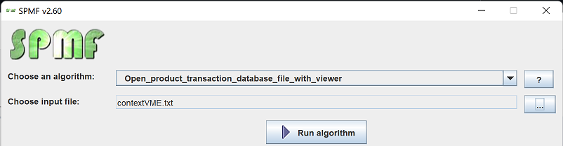
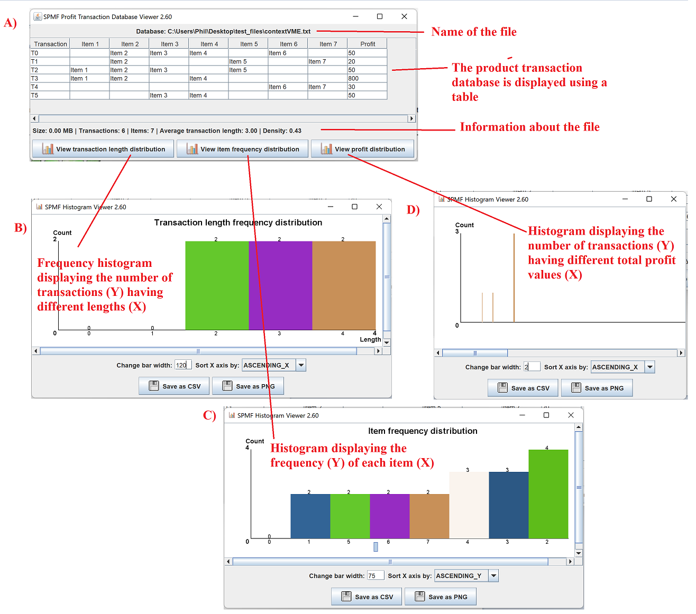

View a product transaction database file with the transaction database Viewer (SPMF documentation)
Product transaction databases are a type of data taken as input by erasable itemset mining algorithms offered in SPMF such as VME.
SPMF offers a tool to view the content of a product transaction database. This tool is called the SPMF product transaction database viewer.
This page explains how to use this tool with an example.
How to run this example?
If you want to run this example from the graphical interface of SPMF, (1) choose the algorithm "Open_product_transaction_database_file_with_viewer", (2) choose the contextVME.txt file as input, and then (3) click "run algorithm" .

- If you want to run this example from the source code of SPMF, run the file MainTestprofitTransactionViewer, which is located in the package ca.pfv.spmf.tests
- If you want to execute this example from the command line interface of SPMF, then execute this command:
java -jar spmf.jar run Open_product_transaction_database_file_with_viewer contextVME.txt
in a folder containing spmf.jar and the file contextVME.txt which is included with SPMF.
What is displayed?
After running the example, the content of the file will be displayed by the tool. The picture below shows the user interface of this viewer.
The window A) show in the picture below is the main window. It displays the product transaction database using a table. The table has six rows in this example. Each row is a transaction from the product transaction database.
Imagine that each transaction represents a product build in a factory and that the items are the part used to build this product..
Take the first row as example.
The cell in the first column indicates that the ID of this transaction is 0.
The cell in the second column indicates that this transaction 0 does not contain the item 1.
The cell in the third column indicates that this transaction 0 contains the item 2.
The cell in the fourth column indicates that this transaction 0 contains the item 3.
The cell in the fifth column indicates that this transaction 0 contains the item 4.
The cell in the sixth column indicates that this transaction 0 does not contain the item 5.
The cell in the fifth column indicates that this transaction 0 contains the item 6.
The cell in the sixth column indicates that this transaction 0 does not contain the item 7.
The cell in the seventh column indicates that the money (profit) for this transaction (product) is 50 $.
The other transactions follow the same format.
This view as a table can be useful to understand the content of a product transaction database file.
Besides, there are buttons that provides additional features:
- By clicking on the button "View transaction length distribution ", a new window is opened, presented as window B) in the picture below. This window displays the frequency histogram of the different transaction lengths in the current file. The number of transactions is the Y axis and the different transaction lengths are the X axis. There are some buttons in this window to export the data from the frequency histogram as a CSV file so that it can be imported in other software (e.g. Excel), or as a picture. Besides some options are provided to adjust the bar width and the order in which the X axis is sorted.
- By clicking on the button "View item frequency distribution ", a new window is opened, presented as window C) in the picture below. This window displays the frequency of the different items in the current file as an histogram. The frequency (support) is the Y axis and the different items are displayed on the X axis. There are some buttons in this window to export the data from the frequency histogram as a CSV file so that it can be imported in other software (e.g. Excel), or as a picture. Besides some options are provided to adjust the bar width and the order in which the X axis is sorted.
- By clicking on the button "View profit distribution ", a new window is opened, presented as window D) in the picture below. This window displays the frequency histogram of the different transaction lengths in the current file in terms of profit. The number of transactions is the Y axis and the different profit values are the X axis. There are some buttons in this window to export the data from the frequency histogram as a CSV file so that it can be imported in other software (e.g. Excel), or as a picture. Besides some options are provided to adjust the bar width and the order in which the X axis is sorted.

What is the input?
The algorithm takes as input a product transaction database in SPMF format, as used by the VME algorithm .
The database used in this example is provided in the text file "contextVME.txt" in the package ca.pfv.spmf.tests of the SPMF distribution.
The input file format of VME is defined as follows. It is a text file. Each lines represents a transaction (product). Each line is composed of two sections, as follows.
- First, the profit of the transaction is indicated by an integer number, followed by a single space.
- Second, the items in the transaction are listed. An item is represented by a positive integer. Each item is separated from the following item by a space. It is assumed that items are sorted according to a total order and that no item can appear twice in the same transaction.
For example, this is the content of the example file "contextVME.txt":
50 2 3 4 6
20 2 5 7
50 1 2 3 5
800 1 2 4
30 6 7
50 3 4
Consider the first line. It means that the transaction {2, 3, 4, 6} has a profit of 50 and it contains the items 2, 3, 4 and 6. The following lines follow the same format.